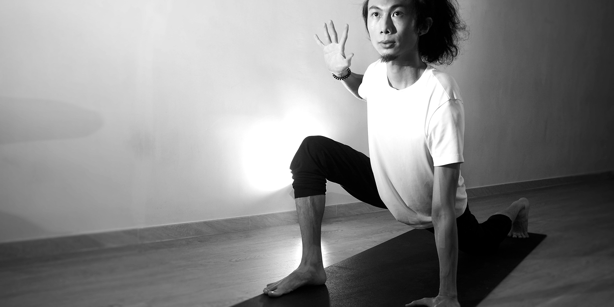

How Stress Gets Trapped in Your Body (And How to Release It)
Ever felt like your body is holding onto something you can’t quite explain?
Your neck is tight. Your jaw clenches without you realizing. Your stomach is always uneasy.
That’s not just random discomfort. That’s stress getting stuck in your body.
We often think of stress as something that happens in our minds. But your body feels it too—and stores it when you don't have the chance to process it. According to The Body Keeps the Score, trauma and stress can live in the body long after the original event has passed (van der Kolk, 2014).
How Stress Gets Stored in the Body
When something overwhelming happens—whether it's a traumatic event or just constant low-grade stress—your nervous system goes into survival mode: fight, flight, freeze, or fawn.
If you don’t complete the full stress cycle, the energy doesn’t just disappear. It gets stuck. In your muscles, your gut, your jaw, even your hips.
Research shows that chronic stress increases inflammation, weakens the immune system, and can even trigger autoimmune conditions (Chronic Stress Promotes Cancer Development, 2018).
The tension that builds in your body is your nervous system's way of staying "ready for danger."
Where Does It Get Stuck?
- Jaw & Neck: Clenching your jaw, grinding your teeth, or holding tension in your neck are signs of suppressed stress, often tied to anxiety or unexpressed anger. Chronic jaw tension has been linked to bruxism and tension-type headaches (Bruxism, 2022).
- Hips & Pelvis: Your psoas muscle, located deep in the core, is considered the “muscle of the soul” in somatic therapy. It contracts in times of fear or trauma. Chronic tightness in the hips may point to unresolved survival stress (The Psoas Book, 1995).
- Gut: The gut is incredibly sensitive to emotional input. Digestive issues like IBS, bloating, or pain often stem from unresolved emotional stress or trauma. This is part of the gut-brain axis in action (Chopra, 2018).
- Shoulders: We often say we’re “carrying the weight of the world,” and the body takes that literally. Elevated shoulders and upper back tightness are common signs of chronic vigilance or emotional overwhelm.
- Chest: Tightness, pressure, or shallow breathing in the chest can reflect unprocessed grief, fear, or anxiety. This area is closely tied to the heart chakra in somatic and energetic work.
- Throat: If you often feel a lump in your throat, struggle to speak your truth, or experience frequent throat tension, this may be the result of repressed emotions or long-term stress (Everything You Need to Know About the Throat Chakra, 2022).
- Stomach: Many people feel emotional stress directly in the stomach area. That “pit in your stomach” or nausea when anxious is your body reacting to dysregulation in real-time.
- Back: Chronic lower back pain may be linked to stored feelings of lack of support, instability, or long-term tension patterns. Emotional processing has been found to directly affect low back pain (Emotional Processing and Chronic Low Back Pain, 2023).
- Legs & Feet: If your legs feel heavy or numb, or your feet are tense and curled, this may reflect a freeze response—where your body wants to run but feels trapped. Trauma can disconnect you from your lower body.
- Hands & Arms: Clenched fists, tingling in the arms, or a general feeling of “numbness” may signal suppressed fear or a fight response still living in the nervous system.

So How Do You Release It?
Talk therapy is powerful. But sometimes, you need to go deeper—into the body.
Somatic exercises use gentle, mindful movement to complete the stress cycle and reset the nervous system. Studies show that physical movement, breathwork, and body awareness are key in discharging stored stress and trauma (Levine, 1997; Medical News Today, 2023).
Even small daily practices like shaking, stretching, or somatic breathwork can begin to tell your body: it's safe to let go.
Your Body Doesn’t Need to Stay in Survival Mode
If you’ve been stuck in chronic fatigue, freeze, or anxiety, the first step to healing is recognizing what your body needs. Instead of forcing yourself to "push through," try doing somatic exercises to regulate your nervous system.
Want to heal your nervous system and get your energy back?
Start your healing journey with Soma today.